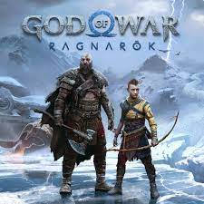
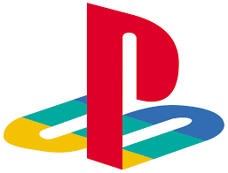

#37 GOD OF WAR RAGNAROK
Depois de o estúdio Santa Monica reformular a série God of War em 2018, a esperança dos fãs estava em uma continuação à altura, que trouxesse os melhoramentos típicos de uma sequência. Mas, felizmente, God of War Ragnarok é muito mais do que isso. É uma continuação que supera expectativas. Ragnarok expande os acertos do seu antecessor em praticamente todos os aspectos, e oferece não só uma trama ainda mais interessante e grandiosa, mas também várias surpresas na jogabilidade. Após cerca de 40 horas, terminei essa campanha tendo a certeza que este era não apenas o meu preferido da série, mas também o meu jogo do ano.
- 